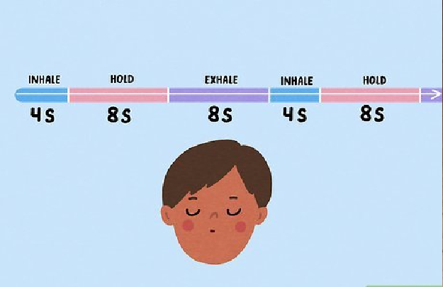

how to relax mind?
You must have heard this phrase- “Peepal paat saras mind dola”, it means that our mind is as light as a peepal leaf, like a peepal leaf is so light that it starts moving due to the flow of a little wind, in the same way our The mind also loses its stability even with the slightest deviation.
There are many ways to calm the mind, but today we will discuss some of the main methods, to bring it into your life, you have to change your routine, if you follow them completely then you can definitely win over your mind. Have mind and dimag ko shant kaise karen necessary things
1. ध्यान (Meditation)
Practice deep breathing: Although this suggestion may sound strange to you, deep breathing exercises are amazingly effective in calming your mind. Practice these daily and in times of stress it will help in reducing it.
Close your mouth and take a deep breath through your nose. Try to take a little extra time to breathe so that you can hold it for four seconds. Hold your breath for four seconds, then release your breath after the count of eight seconds is over. Repeat this exercise a total of four times.
If you find it difficult to slow your breathing for such a long time, then reduce the interval of breathing and try to increase the duration gradually.
Change the duration of each inhalation and exhalation according to your comfort, but make sure that the exhalation takes twice as long as you inhale. After each breath, pause for a few moments in between.
2. Healthy Habits
Practice Yoga: Yoga is a type of low-impact muscle stretching or flexibility exercise that helps to relax the muscles in your body. Since you have to focus your attention on each yoga posture, there is no space in your mind to think about the tension and hence you are forced to be in a state of calmness.
It would be better to join a yoga class to start yoga practice. Yoga classes are meant to create an experience of relaxation and relaxation, even when there is a large number of people present. Find a local trainer and go to the nearest gym to train.
Hatha Yoga is a basic form of yoga and is best for relaxation. Discover Hatha Yoga postures that you can practice on your own at home.
If you have any kind of physical problems like herniated disc, bone diseases like osteoporosis or blood clots, then you should avoid doing yoga.
3. relaxing activities
Engage yourself in repetitive activities. It also uses less of your brain. It is true that to do something one needs to keep working, but by not focusing too much on it, you will be able to keep your mind calm.
Try drawing a picture or a painting. For this you will be forced to concentrate on the work of drawing and you will not have time to think about the stress of your life.
Consistently consistent physical activity can increase your mental comfort. For this, you can consider picking up tree leaves, sweeping the floor or folding clothes.
If you know how to make bracelets or do things like weaving them, then you can also do this work.
Avoid things that require more physical exertion and running or being busy as it can increase instead of reducing stress.
4. avoid stress
Stay away from social media: Social media is the biggest cause of stress, be it your phone or Facebook account. Try to stay away from them for some time to reduce your stress.
Turn off your phone or leave it in your car for a while so that you don't get distracted looking at the phone every few minutes.
Shut down your laptop and also turn off your desktop so that you don't have to worry about checking your online media accounts.
If social media is one of the main reasons for causing major stress in your life, consider staying away from it completely for a certain period of time. Deactivate your online social account for a few weeks or months until you realize that it will not cause any problems in the future.